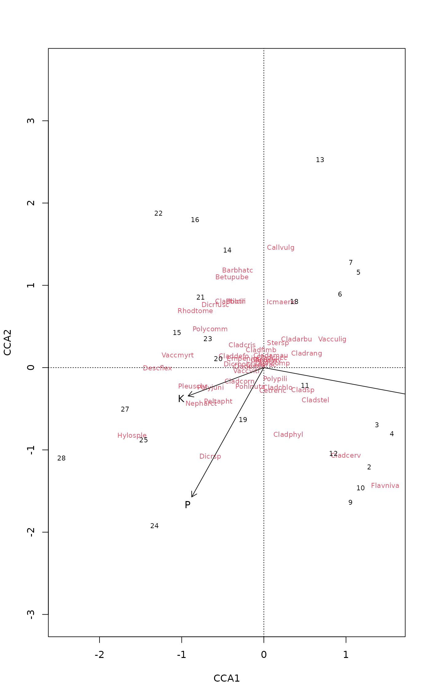

Support Functions for Drawing Vectors
ordiArrowTextXY.RdSupport functions to assist with drawing of vectors (arrows) on
ordination plots. ordiArrowMul finds the multiplier for the
coordinates of the head of the vector such that they occupy
fill proportion of the plot region. ordiArrowTextXY
finds coordinates for the locations of labels to be drawn just
beyond the head of the vector.
Arguments
- x
An R object, from which
scorescan determine suitable ordination scores or an object created byenvfit, or a two-column matrix of coordinates of arrow heads on the two plot axes.- labels
Change plotting labels. A character vector of labels for which label coordinates are sought. If not supplied, these will be determined from the row names of
x, orscores(x, ...)if required. If either of these are not defined, suitable labels will be generated.- display
a character string known to
scoresor one of its methods which indicates the type of scores to extract. In fitting functions these are ordinary site scores or linear combination scores ("lc") in constrained ordination (cca,rda,dbrda). Ifxwas created byenvfitthendisplaycan not be set by the user and takes the value"vectors". Ignored ifxis a matrix.- choices
Axes to be plotted.
- rescale
logical; should the coordinates in or extracted from
xbe rescaled to fillfillproportion of the plot region? The default is to always rescale the coordinates as this is usually desired for objectsxfrom which coordinates are retrieved. If supplyingxa 2-column matrix that has already been rescaled, then set this toFALSE.- fill
numeric; the proportion of the plot to fill by the span of the arrows.
- at
The origin of fitted arrows in the plot. If you plot arrows in other places than origin, you probably have to specify
arrrow.mul.- cex
Character expansion for text.
- ...
Details
ordiArrowMul finds a multiplier to scale a bunch of
arrows to fill an ordination plot, and ordiArrowTextXY finds
the coordinates for labels of these arrows. NB.,
ordiArrowTextXY does not draw labels; it simply returns
coordinates at which the labels should be drawn for use with another
function, such as text.
Value
For ordiArrowTextXY, a 2-column matrix of coordinates for the
label centres in the coordinate system of the currently active
plotting device.
For ordiArrowMul, a length-1 vector containing the scaling
factor.
Examples
## Scale arrows by hand to fill 80% of the plot
## Biplot arrows by hand
data(varespec, varechem)
ord <- cca(varespec ~ Al + P + K, varechem)
plot(ord, display = c("species","sites"))
## biplot scores
bip <- scores(ord, choices = 1:2, display = "bp")
## scaling factor for arrows to fill 80% of plot
(mul <- ordiArrowMul(bip, fill = 0.8))
#> [1] 2.092173
bip.scl <- bip * mul # Scale the biplot scores
labs <- rownames(bip) # Arrow labels
## calculate coordinate of labels for arrows
(bip.lab <- ordiArrowTextXY(bip.scl, rescale = FALSE, labels = labs))
#> [,1] [,2]
#> Al 1.9098765 -0.3562415
#> P -0.9298005 -1.6652122
#> K -1.0069931 -0.3764923
## arrows will touch the bounding box of the text
arrows(0, 0, bip.scl[,1], bip.scl[,2], length = 0.1)
ordilabel(bip.lab, labels = labs)

## Handling of ordination objects directly
mul2 <- ordiArrowMul(ord, display = "bp", fill = 0.8)
stopifnot(all.equal(mul, mul2))